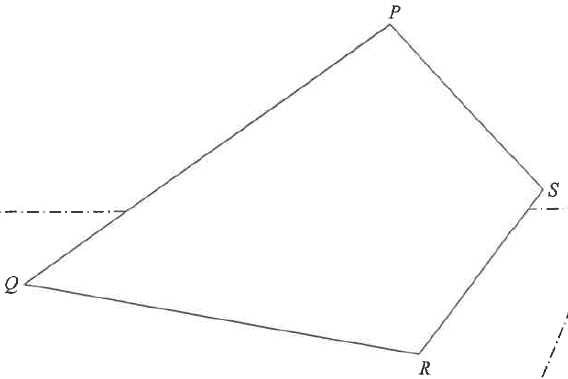

三角學 · 正弦與餘弦公式 · 12 分題

$$\angle QPR=180^{\circ}-30^{\circ}-55^{\circ}=95^{\circ}$$
$$PR=\frac{60\sin30^{\circ}}{\sin55^{\circ}}\approx36.623\ \text{cm}$$
$$RS^{2}=40^{2}+36.623^{2}-2(40)(36.623)\cos25^{\circ}$$
$$RS^{2}\approx1600+1341.3-2655.4=285.9$$
$$RS\approx16.9\ \text{cm}$$
$$\text{面積}=\tfrac{1}{2}(60)(36.623)\sin95^{\circ}+\tfrac{1}{2}(36.623)(40)\sin25^{\circ}$$
$$\approx1094.7+309.4\approx1404\ \text{cm}^{2}\ (\text{即約 }1.40\times10^{3}\ \text{cm}^{2})$$
在紙卡平面內，$P$ 到 $QR$ 的垂直距離為
$$PH=PQ\sin30^{\circ}=60\times\frac{1}{2}=30\ \text{cm}$$
紙卡與地面成 $32^{\circ}$，故 $P$ 到地面的最短距離為
$$PG=30\sin32^{\circ}\approx15.9\ \text{cm}$$
由 $P$ 到 $S$：$PS=40$ 且與 $QR$ 成 $30^{\circ}$（因 $\angle QPS=120^{\circ}$、$\angle QPR=95^{\circ}$ 的方向關係），故 $S$ 比 $P$ 低
$$40\sin30^{\circ}=20\ \text{cm}$$
$$\therefore\ S \text{ 到 } QR \text{ 的距離}=30-20=10\ \text{cm}$$
$S$ 離地高度 $=10\sin32^{\circ}\approx5.299\ \text{cm}$，而 $R$ 在地面上：
$$\sin\theta=\frac{5.299}{16.909}\approx0.3134\quad\Rightarrow\quad\theta\approx18.3^{\circ}$$
因 $18.3^{\circ}\le20^{\circ}$，該聲稱正確。